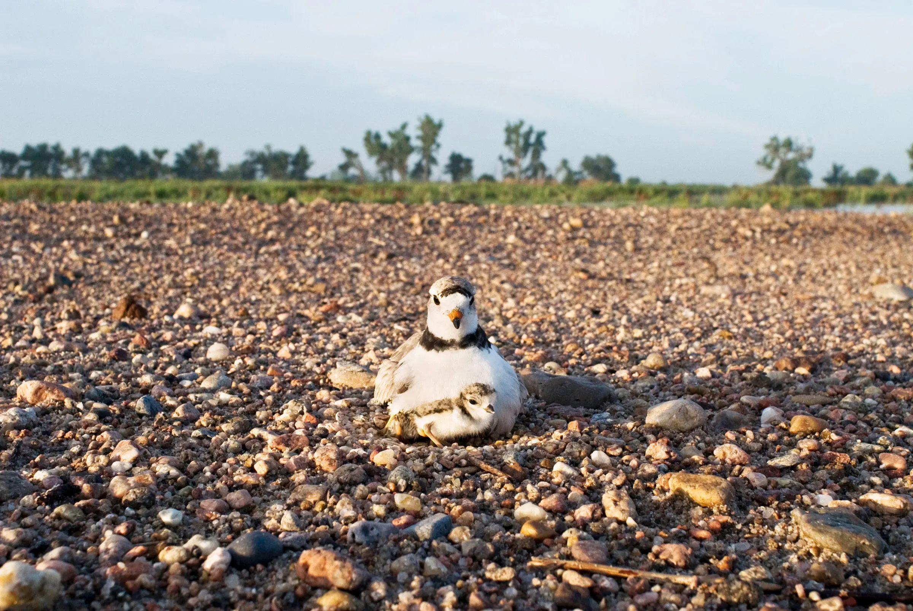

소개
생태계를 파괴하는 밀렵은 결국 우리 자신까지 파괴한다.
사례
불법밀렵은 다양한 동물과 식물에 적용되고 있다.
이를 방지하기 위해 많은 국가에서는 동식물 보호법을
시행하고 있지만 그럼에도 불법밀렵은 매년 많은 사례가
발생하고 있다.
그 사례로는 다음 5가지가 있다.
1. 코끼리 엄지 손가락 수집

코끼리의 엄지 손가락은 보석등의 재료로 사용되는 경우가 있다. 이를 위해 코끼리를 사냥하고 엄지 손가락을 베어내는 일이 일어나고 있다
2. 코뿔소의 뿔 수집

코뿔소의 뿔은 중국에서 중국 전통 의학에 사용되는 보약으로 인기가 있다. 그래서 코뿔소를 사냥하여 뿔을 수집하는 일이 일어나고 있다.
3. 앵무새 밀렵
앵무새도 애완용으로 인기가 많은데, 이를 위해 앵무새를 사냥하여 밀매하는 사례가 있다.
4. 고릴라 밀렵
고릴라는 멸종위기종으로서 보호받고 있지만, 그에 대한 수요는 여전히 높다. 고릴라를 사냥하여 밀매하는 일이 많다.
5. 희귀 야생동물 밀집 지역 밀렵
희귀 동물들이 많이 서식하는 지역에서는 불법적인 사냥과 밀집 지역의 목재를 수집하는 일이 잦다.
밀렵으로 인한 멸종위기종
밀렵으로 인해 개체 수가 상당히 많이 줄어들은 많은 생물들 중,
4가지를 알아보겠습니다.
산양
제 217호로 지정된 천연기념물 산양은 3년 사이에 5번이나 밀렵으로 희생되었다. 사람의 접근이 힘든 험준한 바위절벽을 중심으로 살아가는 산양은 현재 800~920마리 정도가 설악산, 비무장지대 일대, 양구-화천, 울진-봉화-삼척지역 등에서 살아가고 있습니다.
코뿔소

코뿔소는 그 귀여움으로 유명한 동물 중 하나이지만, 그 귀여움으로 인해 밀렵 대상 중 하나이다. 코뿔소의 뿔은 중국 전통 의학에서 사용되며, 그 수요 때문에 매년 많은 코뿔소가 밀렵되고 있습니다. 이로 인해 코뿔소는 현재 멸종 위기 종 중 하나이다.
호랑이
호랑이는 아름다운 동물 중 하나이다. 그러나 그들의 아름다움과 힘 때문에 많은 사람들이 그들을 밀렵하고 있다. 호랑이의 가죽과 뼈는 중국 전통 의학에서 사용되고 있으며, 그들의 털은 옷감으로 사용된다. 이러한 이유로, 호랑이는 현재 멸종 위기 종 중 하나이다.
코끼리
코끼리는 지구상에서 가장 큰 육상 동물 중 하나이다. 그러나 그들의 상어 모양의 엄청난 뿔 때문에 밀렵의 대상 중 하나이다. 이 뿔은 중국에서 전통적인 의학에서 사용되며, 이를 위해 많은 코끼리들이 밀렵되고 있다. 이로 인해 코끼리는 멸종 위기에 처해있다.
영향
인간에게도 밀렵은 위험합니다.
밀렵은 인류에게도 매우 심각한 문제가 되고 있다.
1. 생태계 파괴
코끼리의 엄지 손가락은 보석등의 재료로 사용되는 경우가 있다. 이를 위해 코끼리를 사냥하고 엄지 손가락을 베어내는 일이 일어나고 있다
2. 종의 멸종
코뿔소의 뿔은 중국에서 중국 전통 의학에 사용되는 보약으로 인기가 있다. 그래서 코뿔소를 사냥하여 뿔을 수집하는 일이 일어나고 있다.
3. 자연 환경 파괴
앵무새도 애완용으로 인기가 많은데, 이를 위해 앵무새를 사냥하여 밀매하는 사례가 있다.
4. 생태계 불균형
고릴라는 멸종위기종으로서 보호받고 있지만, 그에 대한 수요는 여전히 높다. 고릴라를 사냥하여 밀매하는 일이 많다.